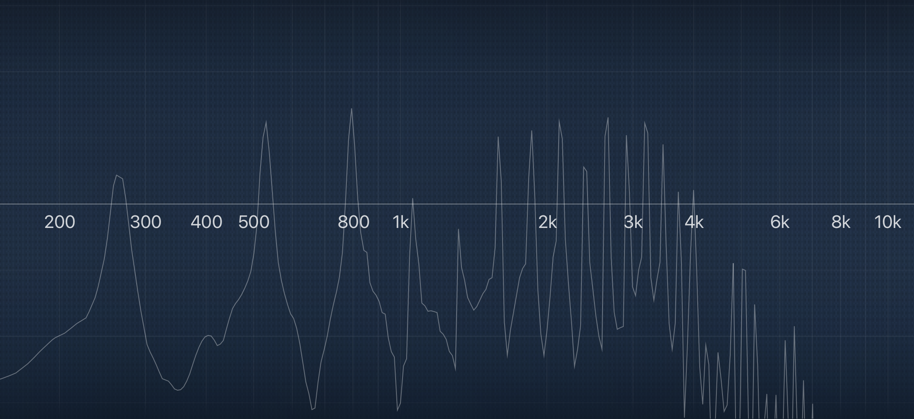
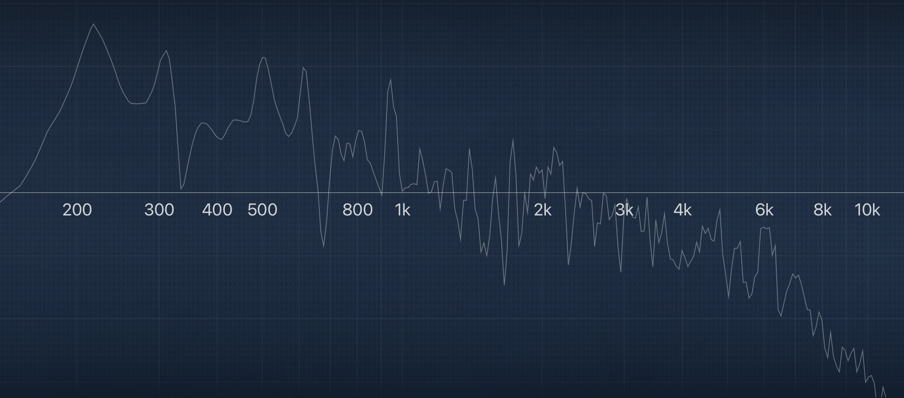
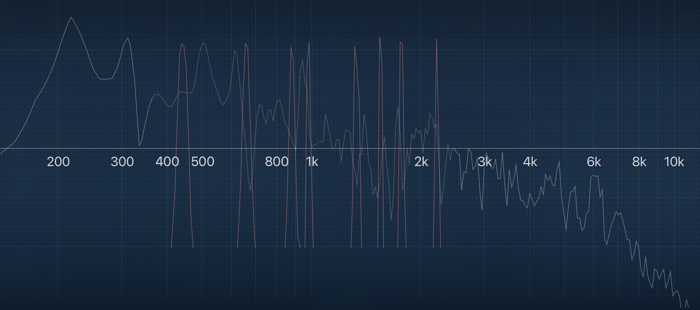
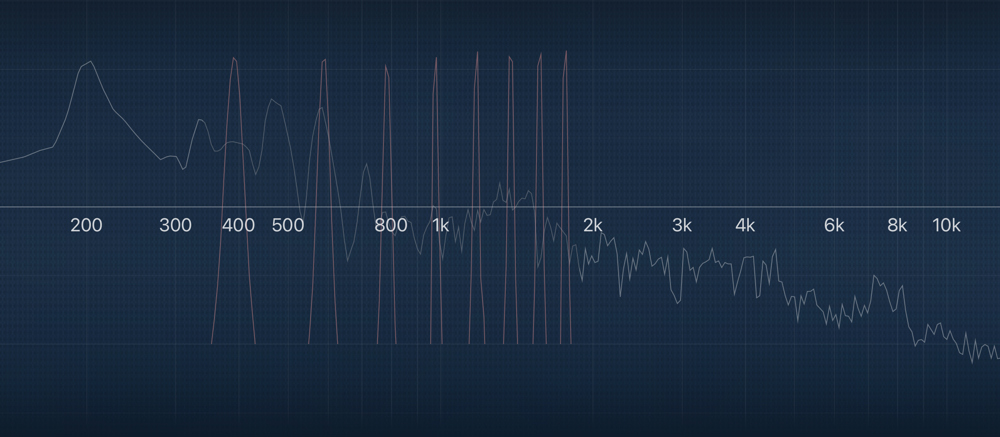
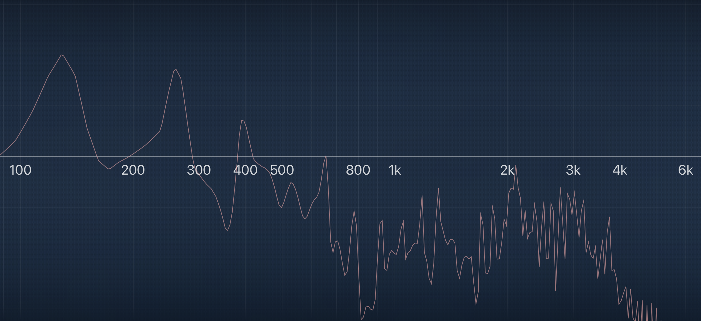
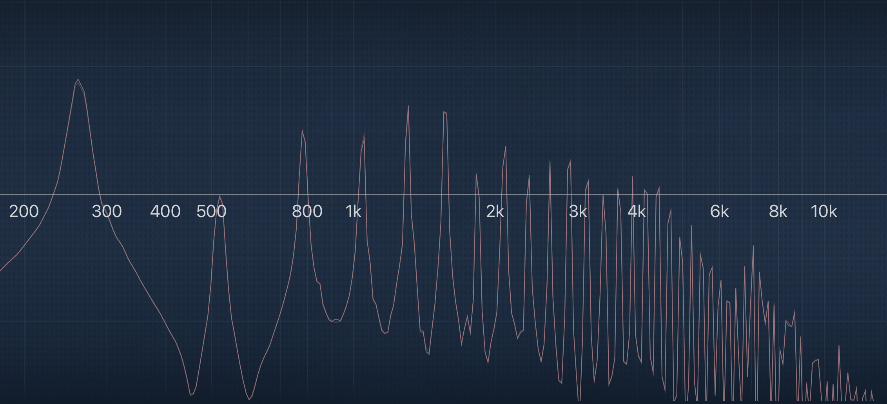

Drums Don’t Play Actual Pitches. And Even if They Could, Why Would You Want Them To?
Posted on July 2, 2022

I’m starting to wonder if drummers are on a misguided quest to try and get their instrument to be taken more seriously. I think the metric modulation nonsense that I often complain about is part of this; other instruments get to talk about advanced harmony, so I get the appeal… but you just end up looking silly to non–drummers.
There’s another topic I want to look at in the same vein: tuning drums to notes. Like many problems in this day and age, the internet is partly to blame. Case in point: my inspiration to write this comes from a Reddit thread that was started this past week. As always, I chimed in on the thread and will expand upon my thoughts here.
This time around, OP was arguing that drums do not play pitches, and I agree. Part of my reasoning comes from intuition and experience. For instance, whenever I fire up a new project in MuseScore, the drum set is always classified under “Percussion — Unpitched”. And as I’ve mentioned before, I have never seen drum sheet music instructing me to tune tom/snare/bass drums to specific notes. Never in a marching band, a jazz band, or an orchestra. If a concert snare drum sounds bad, it’s not because it’s dissonant with the rest of the ensemble. It’s just tuned badly.
That’s the funny thing about tuning drums. A guitarist might have a really bad tone, but so long as they’ve tuned the instrument, they could at least take solace in the fact that they’re playing correct notes. For drums, it’s quite the opposite. The tuning is all about tone, and the pitches should be neglected. Everybody drools over the John Bonham drum sound, but there’s a reason why we use subjective language to describe the sound of his drums instead of praising his intonation like we would with a trumpeter.
That’s enough anecdotes and intuition; let’s get more technical. There’s some physics behind why certain instruments are classified as playing definite pitches or indefinite pitches. Let’s start with the guitar. I plugged a guitar right into my interface and played the note C4 (also known as middle C). This is just clean tone, with no effects, and I’m using the EQ as a spectrum analyzer:
You can clearly see that there are well–defined peaks that stand out from the rest of the signal. The peak that’s the farthest on the left is the fundamental. This is the actual note that the instrument is playing. All of the peaks to the right are overtones.
Overtones are part of what gives an instrument it's a unique sound. The guitar plays definite pitches (a.k.a. actual notes) because the overtones follow the harmonic series — that is, the overtones are simple multiples of the fundamental.
We know that the fundamental in this case is about 261Hz, so we can calculate the mathematical values of the harmonics, and the first eight are as follows:
- 523.26
- 784.89
- 1046.52
- 1308.15
- 1569.78
- 1831.41
- 2093.04
- 2354.67
Have another look at the spectrum — it should be pretty easy to see that the actual harmonics are very close to their mathematical counterparts:
In practice, there’re likely to be some deviations. Those deviations, combined with variation in the volume of the harmonics, will work to provide an instrument with its timbre.
Now, let’s look at the spectrum of a snare drum recording I made:
This doesn’t look anything like the guitar. The first few overtones are easy to spot, but after that, we get a wild mishmash of peaks that are squashed together. Many of them don’t stand out at all as obvious harmonics.
It looks like the fundamental is around 220hz, so we can do some math again and calculate the first eight harmonics:
- 440
- 660
- 880
- 1100
- 1320
- 1540
- 1760
- 1980
Let's plot these frequencies on the snare drum’s spectrograph. I used some sine wave generators to find where these exact frequencies should appear on the EQ, and then I overlaid them on top of the snare drum. Here are the results:
By now it should be clear why drums are regarded as inharmonic instruments that don’t play notes. A drum has a fundamental and has overtones, but when the overtones are so numerous, complex, and random that they don't neatly follow the harmonic series, our ears can’t fish out the fundamental and hear the drum playing a pitch.
Now, ostensibly this can all be overcome. Timpani are drums that play actual pitches, so with a lot of trial and error, you could tune your drums to have a more harmonic resonance. But that takes me to my second question: what’s the point?
Consider the job of a drummer in a band. For me, it’s about keeping solid time, driving the song, accentuating transitions, reinforcing different elements of the tune, and providing diverse textures that make a track more interesting to listen to. More importantly, drummers are not supposed to play melodies, harmonies, or basslines… so why worry about the notes?
The proponents of tuning drums to pitches usually fall into two groups: those who sincerely believe their drums are playing notes, and those who use pitches more like a tuning aid.
For the first group, I hope it’s clear why it’s very difficult for a drum to play an actual note. And even if you could tune your drums to something like a major scale, what do you do between songs that are in different keys? What about songs that change key partway through? What about songs that borrow notes and chords from another key?
There do exist drums that have more sophisticated tuning systems that allow you to tension the top and bottom heads at once. All we need now are gauges like the ones on Timpani drums so you can see what pitches the drums are at, as well as much higher tolerances for drum manufacturing so these gauges are accurate. And if there’s a key change in a song, you’d have to write your drum parts accordingly so you have time to re–tune your drums.
After writing that all down, the whole thing just seems ridiculous. Drums would be much more expensive, and most drummers would have to totally rethink how the instrument works. Mankind already went through a long and arduous process to allow instruments to change keys quickly, and the drum set doesn’t need to be a part of that.
Now onto the second group: some drummers will use general differences in fundamental frequencies as a reference when comparing tones across the different drums on their kit. I guess this is fine, but you must accept that whatever “interval” you choose between your drums is just a difference in numbers. A “minor third” between toms won’t sound like a minor third played on the piano. With this kind of approach, it’s more of a guess and check than anything else, but since many musical intervals use simple ratios that are easy to work with, I kinda see how this might be helpful. Maybe a “minor third” between your toms will just happen to sound good. Maybe the dreaded tritone will sound even better!
There are a lot of drummers out there who tune their drums to pitches and get good–sounding drums, but I think it’s incidental more than anything else. There was an engineer in the Reddit thread who explained the benefit of tuning drums to pitches, but they seemed to subscribe to the inaccurate notion that drums play actual pitches that can sound dissonant with the rest of the band.
Some people brought up a guy named Eric Valentine, who apparently tunes his drums to notes. I found a video of him demonstrating his approach and I threw his snare drum into the EQ. He claims that his snare is tuned to G3 — 196Hz. Let’s plot the harmonics:
I dunno man… his snare drum looks an awful lot like mine. If anything, his overtones are even less prominent than mine are! Mathematically, there should be only nine peaks under 2khz. Maybe you can figure out which ones are supposed to be the harmonics. This just doesn’t look (or sound) like a real pitch to me.
For another reference, here’s a bass guitar plotted — notice how much the overtones stand out in the graph:
Here’s an alto saxophone:
¯\_(ツ)_/¯
Even the Sounds Like a Drum guys went on this goose chase, so let’s do one more example. This time, we’ll use our ears. I took a snippet of them playing a tom that’s apparently tuned to a B–flat. I played piano along with the recording, alternating between B–flat and B natural.
If the drums are actually playing a discernible note, we should hear some obvious dissonance when the piano plays a B natural. Have a listen:
I don’t hear any such dissonance. Notice what happens when the drum is replaced with a guitar:
The proof is in the pudding.
To me, the most ridiculous part of this whole debate is the idea that your personal tuning approach determines whether or not your drums will play notes. Imagine a guitarist saying “hey everybody, I put some new strings on my ax and I’m not gonna be playing notes today”.
So there are a few points to wrap up with. First, I think the physics makes it clear that it’s very unlikely your drums are playing actual notes. Maybe it’s possible to get them to play notes, but again, why bother? Because the most important point is this: drums don’t need notes to do their job.
Tags: 2022 • Rants & Raves • Education